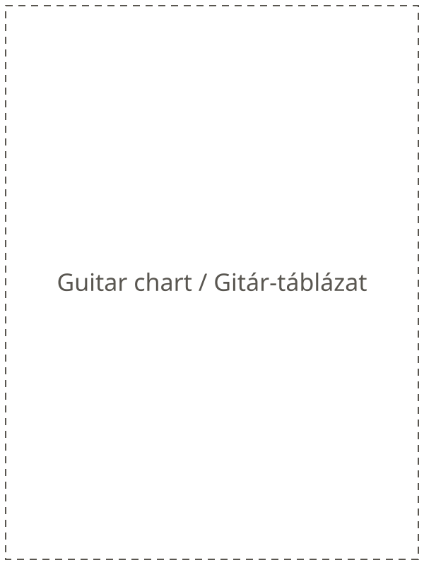
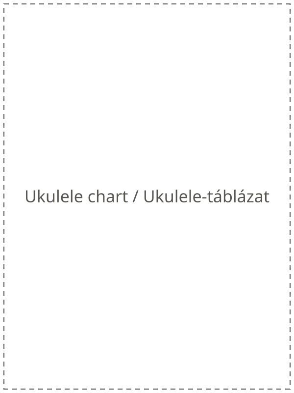
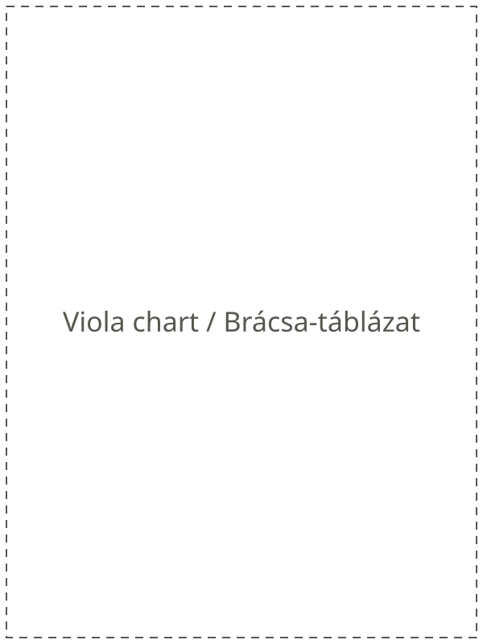
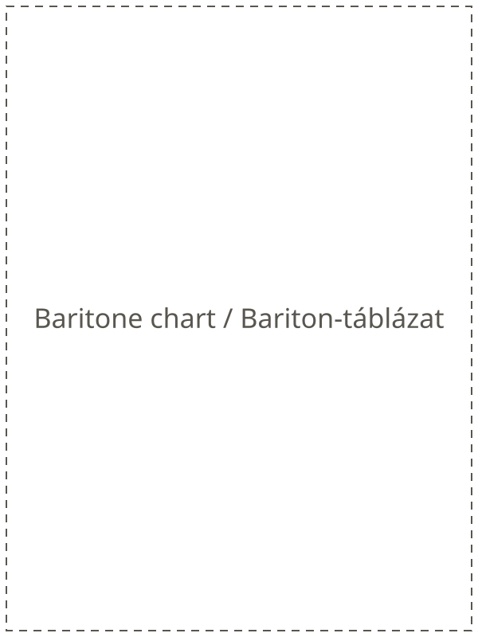

Táblázatok
Kis felbontású, vízjeles előnézet a 4 táblázatról (gitár, ukulele, brácsa, bariton gitár + Túlélő Akkordok).




Színes, laminált változat rendelhető: [ÁR] + szállítás. Írj a hello@hungariansongbook.com címre.